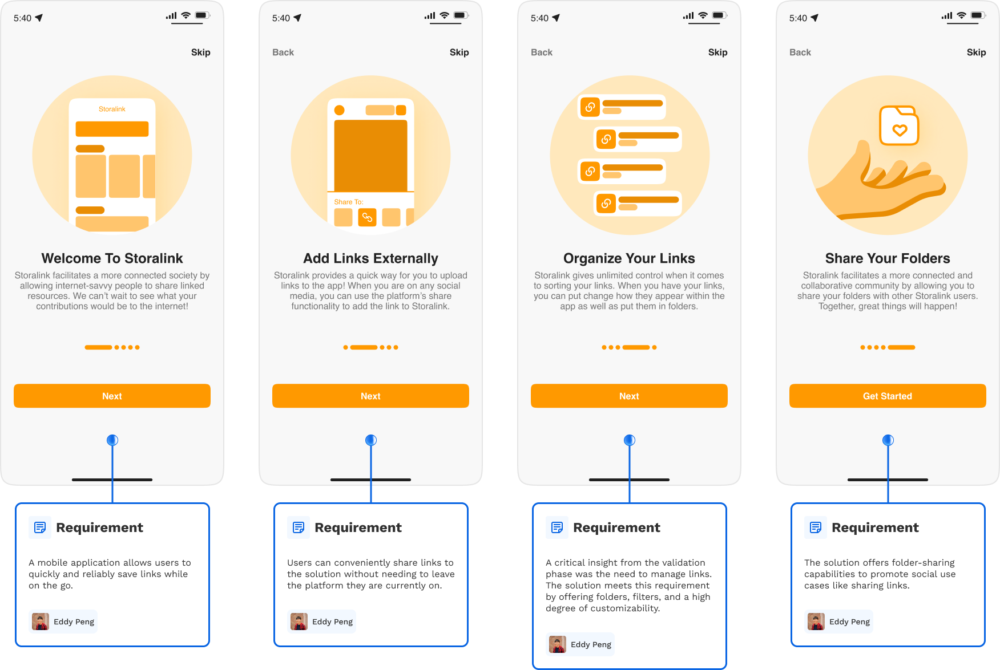
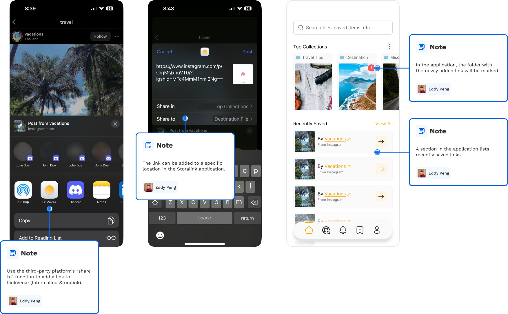
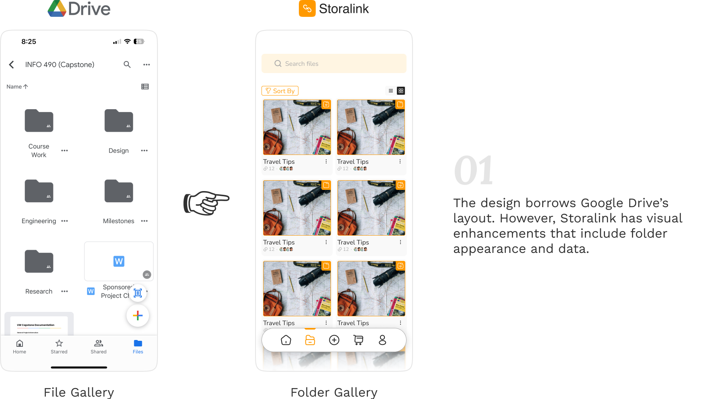
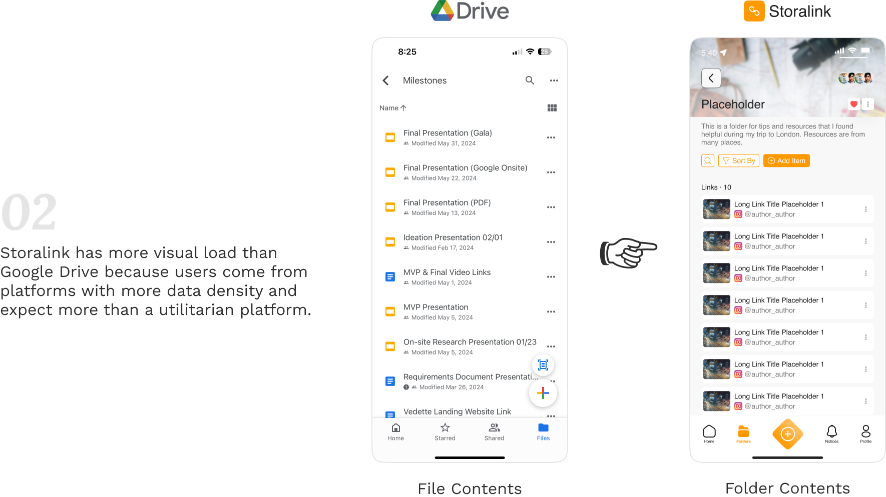
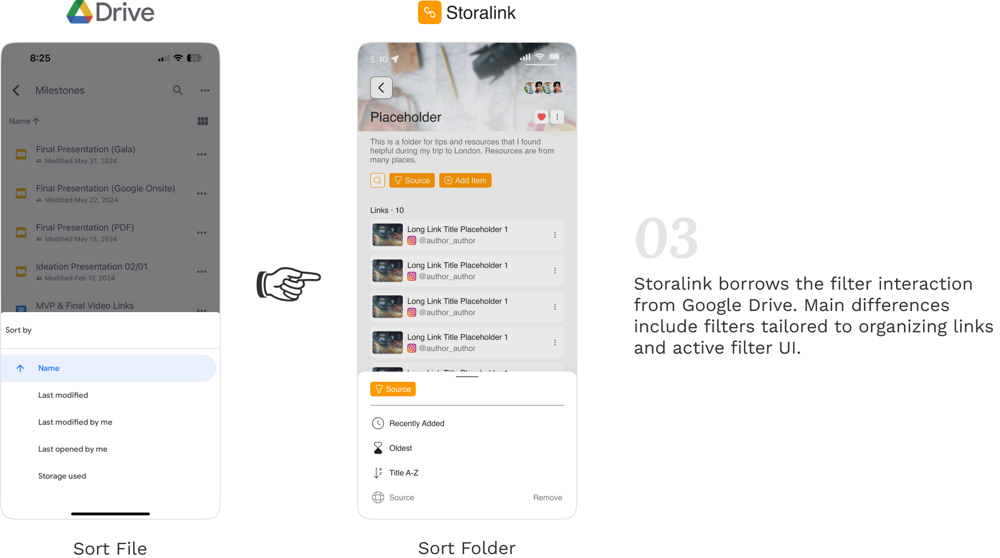
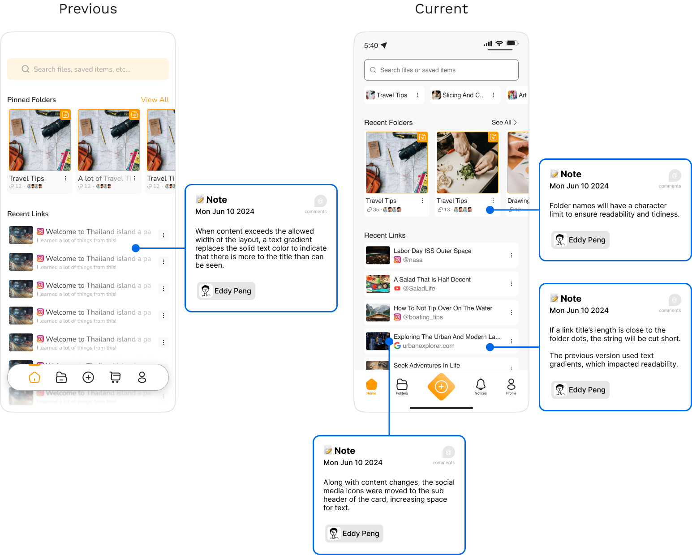
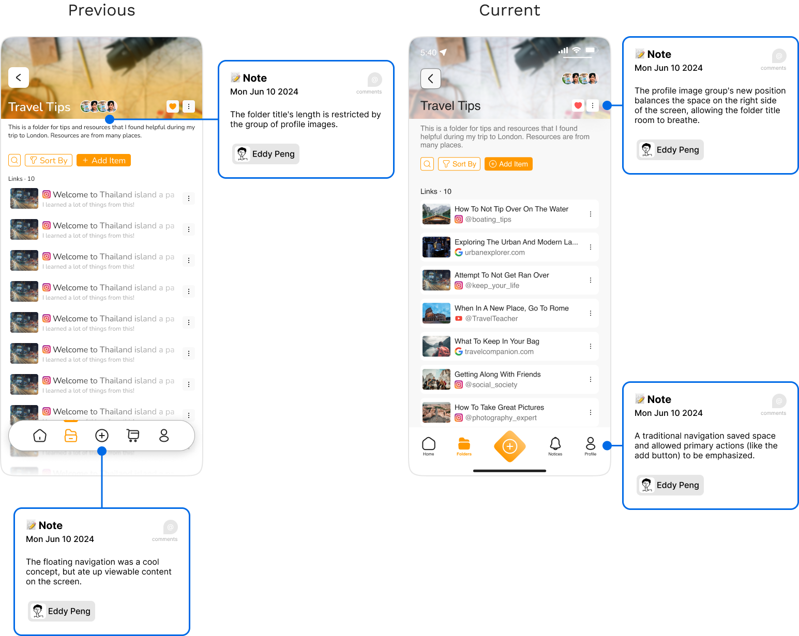
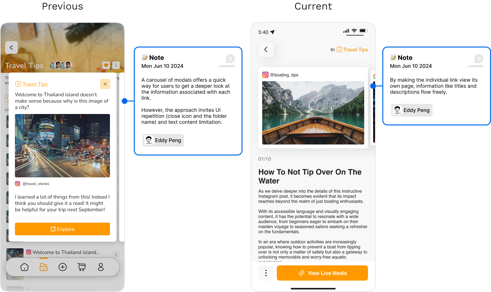

Chapters
UI Designer
1 Designer
3 Engineers
May 2023 – Present
(1+ Years)
Existing solutions include keeping links on a Word document or a private social media channel. However, both fell short in terms of convenience and intuitiveness. Thus, we put together a team and started our journey.
From conducting validation research and guiding brand identity to establishing a design system and high-fidelity prototype screens, I built the application from 0 to 1. I also worked closely with the engineers, resolving feasibility issues and unexpected UI changes.
After conducting interviews with 22 acquaintances and mutual friends, the need for a method of managing links was clear. Concept validation was limited to one week due to tight scheduling. Subsequently, the number of people available was limited.

The solution was required to be a mobile application because many primary users indicated challenges. Participants will most likely use the solution for social and personal reasons and to save items from the internet and social media platforms like Instagram and Facebook. As such, the solution needed to allow ease of URL sharing to the application from any platform the user may be on.
I balanced muted and brand colors while keeping the product requirements in mind, complying with WCAG color contrast guidelines, receiving constant feedback from my teammates, and ensuring the application's interactions were familiar to users.
The homepage gives access to pinned folders, recent folders, recent links, and a universal search bar. Interacting with a folder card reveals the links it contains.


The platform provides many options for filtering through the folder's contents. Interacting with a specified link card reveals a carousel layout where the user can flip through all links in that folder with descriptive information.
A third-party platform's "share to" functionality facilitates convenient media insertion into the application. Users can control the folder location of the new addition.

I sorted components by their type, such as input boxes, cards, and popups, into specific boards to make them easier for engineers to find during development. Additionally, I included assets like default images and layout grids for reference.
During the design process, the engineers were working on the functionality. This dynamic ensured the two parts of the team were on the same page to avoid confusion. Through workshops with the engineering team, I created a user flow to communicate expected functionality and architecture.
Because my team and I had a product idea in mind, it was essential to validate the concept so it solved a problem that existed. To facilitate validation, I illustrated the core concept: how would a user add a link to the solution from a third-party platform?
The main difference between Storalink and Google Drive is granularity because Storalink only works with hyperlinks. By incorporating layouts, user flows, and interfaces from Google Drive, I saw that I could take advantage of Jakob’s Law, making it easier for many people experienced in Google Drive to use the solution.
  The platform depended on user-generated content such as links, descriptions, and names. I considered imposing a maximum character length on various fields to keep the application tidy. Alternatively, I contemplated allowing users to adjust their input if it interfered with usability. Ultimately, I decided to strike a balance between both approaches. I also refined the UI so elements wouldn't take up too much space.
  As I created the solution from 0 to 1, I constantly had the prototype on my phone to put myself in the user's shoes and interact with my creation. This strategy improved usability and UI because I could ensure elements were the proper size for ease of interaction. Viewing the prototype on the desktop is unrealistic and could be misleading, potentially costing time and disrupting workflow.
To identify pain points in the design, I will conduct usability and A/B testing. Also, during UI critiques, I noticed that some design system components need adjustments for better sizing, spacing, and layout.
On the engineering side, challenges with cloud syncing led to the initial app store version releasing without the sharing feature, which is a crucial part of the concept. The live application will receive monthly updates, including new features and usability improvements.